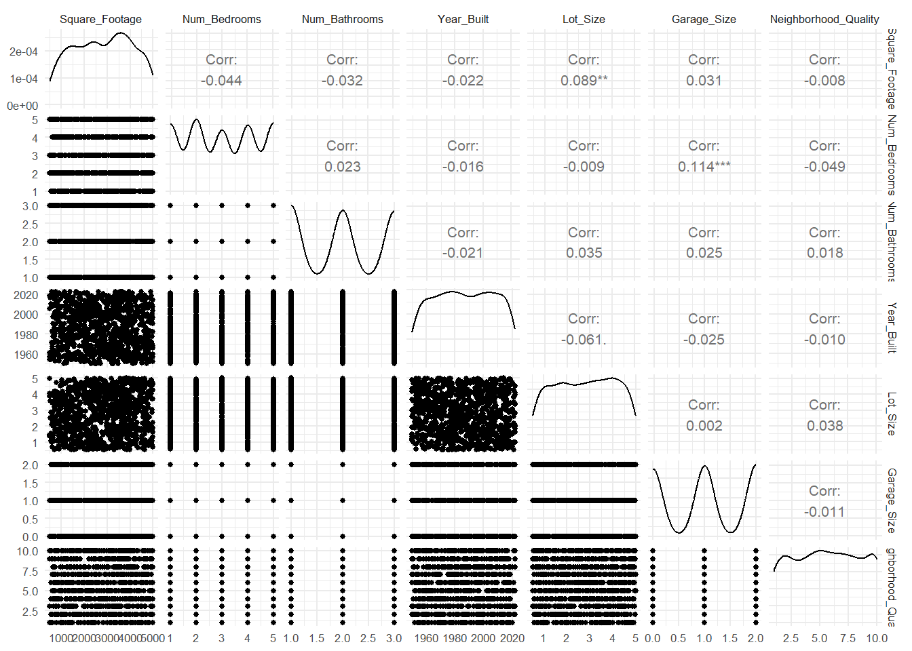
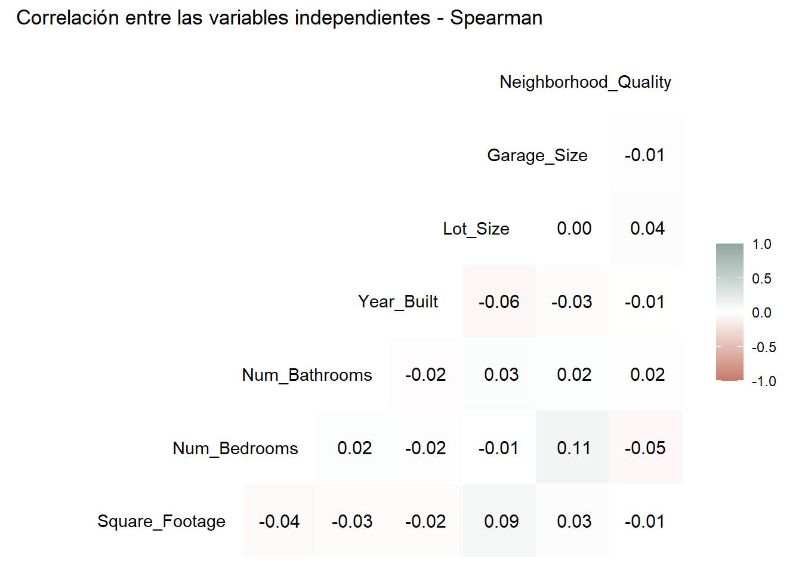

6 Correlación entre variables independientes
Antes de resumir las relaciones entre las variables predictoras, es necesario probar formalmente, para cada pareja, si la asociación observada es estadísticamente real o si podría atribuirsele solo al azar de la muestra. Dado que las variables continuas no cumplen el supuesto de normalidad, se utiliza el coeficiente de correlación de Spearman (\(r_s\)) en lugar de Pearson: Spearman no exige normalidad y se calcula sobre el orden (rango) de los datos en lugar de su valor exacto, lo que también lo hace apropiado para las variables discretas de pocos niveles del conjunto de predictoras.
predictoras <- c("Square_Footage", "Num_Bedrooms", "Num_Bathrooms", "Year_Built",
"Lot_Size", "Garage_Size", "Neighborhood_Quality")6.1 Inspección conjunta de la linealidad
A pesar de no ser un paso obligatorio, conviene revisar visualmente si alguna pareja de predictoras muestra un patrón, sea lineal o no, que valga la pena explorar con detenimiento.

La matriz de dispersión arroja las 21 combinaciones de pares a la vez y se concluye que ninguna de ellas muestra un patrón discernible. Las nubes de puntos, entonces, son uniformes en todos los paneles.
6.2 Pruebas de hipótesis de correlación entre las 7 predictoras
Incluso si el patrón visual no es evidente, resulta imprudente concluir, sin marcha atrás, que no existe asociación. Por eso, para conservar las buenas prácticas, hay que hacer una prueba formal para cada una de las 21 parejas posibles entre las 7 predictoras. Se calculan con rcorr() del paquete Hmisc, que entrega en un solo paso la matriz de coeficientes y la matriz de p-valores correspondientes a esas mismas 21 pruebas.
A continuación, la matriz con los coeficientes de correlación de Spearman (\(r_s\)) obtenidos para cada una de las 21 parejas de predictoras:
round(resultado_rcorr$r, 3) %>%
kableExtra::kbl() %>%
kableExtra::kable_styling(bootstrap_options = c("striped", "hover", "condensed", "bordered"),
full_width = FALSE) %>%
kableExtra::scroll_box(width = "100%")| Square_Footage | Num_Bedrooms | Num_Bathrooms | Year_Built | Lot_Size | Garage_Size | Neighborhood_Quality | |
|---|---|---|---|---|---|---|---|
| Square_Footage | 1.000 | -0.043 | -0.031 | -0.022 | 0.090 | 0.030 | -0.008 |
| Num_Bedrooms | -0.043 | 1.000 | 0.023 | -0.015 | -0.009 | 0.114 | -0.049 |
| Num_Bathrooms | -0.031 | 0.023 | 1.000 | -0.021 | 0.035 | 0.025 | 0.018 |
| Year_Built | -0.022 | -0.015 | -0.021 | 1.000 | -0.061 | -0.026 | -0.010 |
| Lot_Size | 0.090 | -0.009 | 0.035 | -0.061 | 1.000 | 0.003 | 0.038 |
| Garage_Size | 0.030 | 0.114 | 0.025 | -0.026 | 0.003 | 1.000 | -0.011 |
| Neighborhood_Quality | -0.008 | -0.049 | 0.018 | -0.010 | 0.038 | -0.011 | 1.000 |
Y, enseguida, los p-valores correspondientes a cada uno de esos coeficientes, necesarios para determinar cuáles de las 21 pruebas resultan estadísticamente significativas:
round(resultado_rcorr$P, 4) %>%
kableExtra::kbl() %>%
kableExtra::kable_styling(bootstrap_options = c("striped", "hover", "condensed", "bordered"),
full_width = FALSE) %>%
kableExtra::scroll_box(width = "100%")| Square_Footage | Num_Bedrooms | Num_Bathrooms | Year_Built | Lot_Size | Garage_Size | Neighborhood_Quality | |
|---|---|---|---|---|---|---|---|
| Square_Footage | NA | 0.1712 | 0.3214 | 0.4823 | 0.0045 | 0.3445 | 0.8018 |
| Num_Bedrooms | 0.1712 | NA | 0.4614 | 0.6253 | 0.7666 | 0.0003 | 0.1204 |
| Num_Bathrooms | 0.3214 | 0.4614 | NA | 0.5043 | 0.2700 | 0.4377 | 0.5774 |
| Year_Built | 0.4823 | 0.6253 | 0.5043 | NA | 0.0552 | 0.4173 | 0.7568 |
| Lot_Size | 0.0045 | 0.7666 | 0.2700 | 0.0552 | NA | 0.9165 | 0.2317 |
| Garage_Size | 0.3445 | 0.0003 | 0.4377 | 0.4173 | 0.9165 | NA | 0.7213 |
| Neighborhood_Quality | 0.8018 | 0.1204 | 0.5774 | 0.7568 | 0.2317 | 0.7213 | NA |
De las 21 parejas, Lot_Size-Square_Footage (\(r_s\) = 0.090; p = 0.0045) y Garage_Size-Num_Bedrooms (\(r_s\) = 0.114; p = 0.0003) resultan estadísticamente significativas al 5%; en ambos casos se rechaza H₀, pero las magnitudes son tan pequeñas que carecen de relevancia práctica. A su vez, las 19 parejas restantes no muestran evidencia de asociación, por lo que no se rechaza H₀ en ninguna de ellas.
6.3 Magnitud del efecto
Cohen (1988) propone umbrales de referencia para interpretar la magnitud de un coeficiente de correlación, independientemente de su significancia: |r| < 0.10 se considera un efecto trivial, entre 0.10 y 0.29 un efecto pequeño, entre 0.30 y 0.49 moderado, y 0.50 o más, grande.
r_vals <- abs(r_matriz[!is.na(r_matriz)])
clasificacion <- cut(r_vals,
breaks = c(-Inf, 0.0999, 0.3, 0.5, Inf),
labels = c("Trivial (<0.10)", "Pequeño (0.10-0.29)",
"Moderado (0.30-0.49)", "Grande (>=0.50)"))Aplicando estos umbrales a las 21 correlaciones calculadas, se obtiene la siguiente clasificación:
table(clasificacion) %>%
as.data.frame() %>%
kableExtra::kbl(col.names = c("Magnitud del efecto", "Frecuencia")) %>%
kableExtra::kable_styling(bootstrap_options = c("striped", "hover", "condensed", "bordered"),
full_width = FALSE)| Magnitud del efecto | Frecuencia |
|---|---|
| Trivial (<0.10) | 20 |
| Pequeño (0.10-0.29) | 1 |
| Moderado (0.30-0.49) | 0 |
| Grande (>=0.50) | 0 |
De las 21 parejas de predictoras, 20 se clasifican como efecto Trivial según Cohen, y solo Garage_Size–Num_Bedrooms (\(r_s\) = 0.114) terminó encasillada en la categoría de efecto Pequeño. Incluso Lot_Size–Square_Footage, la otra correlación estadísticamente significativa de la sección anterior (\(r_s\) = 0.090), queda clasificada como trivial bajo este criterio, confirmando así, ahora con un criterio de magnitud del efecto respaldándolo, que ninguna de las 21 parejas de predictoras representa una asociación con relevancia en la práctica.
6.4 Mapa de calor de correlaciones
ggcorr(data[predictoras], label = TRUE, label_round = 2, hjust = 0.85, layout.exp = 2,
method = c("pairwise", "spearman"),
low = "#c47b6b", mid = "white", high = "#8fa8a0") +
labs(title = "Correlación entre las variables independientes - Spearman")
La gran mayoría de las casillas están cerca de cero, en tonos tan pálidos que apenas se distinguen del blanco. Las dos correlaciones más altas del conjunto, Num_Bedrooms-Garage_Size (0.11) y Square_Footage-Lot_Size (0.09), son también las únicas dos casillas con un leve tinte verde, aunque siguen estando muy lejos de un tono fuerte. Por otra parte, el resto de las 19 parejas se ubica entre −0.06 y 0.04, prácticamente indistinguibles de cero tanto en el número como en el color.
Con un mapa de calor como este, es posible hacerse una idea respecto a qué variables podrían combinarse o transformarse para sacarles más provecho; cuando una casilla se pinta con un color fuerte, hacia el verde oscuro o el rojo, suele ser una señal de que vale la pena construir algo a partir de esas dos variables. Empero, casi todo el mapa quedó en blanco, y las dos casillas menos pálidas siguen representando, según los criterios de Cohen, una magnitud demasiado pequeña para considerarse una asociación real. En otras palabras, no hay ninguna pareja de variables que esté “pidiendo” ser combinada o transformada, ya que las 7 predictoras se comportan, en la práctica, como si fueran independientes entre sí.